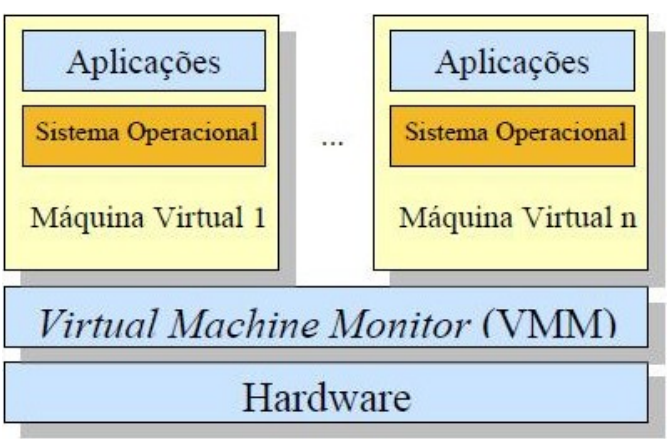

flowchart TB A1[Aplicações] --> S1[Sistema Operacional] A2[Aplicações] --> S2[Sistema Operacional] S1 --> VM1["Máquina Virtual 1"] S2 --> VM2["Máquina Virtual n"] VM1 --> MMV["Virtual Machine Monitor (VMM)"] VM2 --> MMV MMV --> HW[Hardware]
Computação em Nuvem e Virtualização
Técnico em Redes de Computadores · IFSP Boituva · pasquati@ifsp.edu.br · v17
“Uma máquina virtual é uma cópia eficiente e isolada da máquina real.”
— Popek & Goldberg, 1974
Esse artigo de 1974 ainda é a referência formal usada até hoje para definir virtualização.
flowchart TB A1[Aplicações] --> S1[Sistema Operacional] A2[Aplicações] --> S2[Sistema Operacional] S1 --> VM1["Máquina Virtual 1"] S2 --> VM2["Máquina Virtual n"] VM1 --> MMV["Virtual Machine Monitor (VMM)"] VM2 --> MMV MMV --> HW[Hardware]

Um bom monitor de máquina virtual (MMV) deve garantir:
| Tipo I (clássico) | Tipo II (hospedado) | |
|---|---|---|
| Exemplos | VMware ESXi, Hyper-V, Xen Server | VMware Workstation, VirtualBox |
| Onde roda | Direto no hardware | Dentro de um SO |
| Uso | Produção / data center | Testes / uso pessoal |
Discussão em grupo (10 min):
Uma escola tem 1 servidor físico potente e quer oferecer a cada turma um “laboratório virtual” isolado (SO próprio, aplicações próprias).
Prática: VirtualBox — vamos criar e explorar uma máquina virtual de verdade
Início · IFSP Boituva · Computação em Nuvem e Virtualização